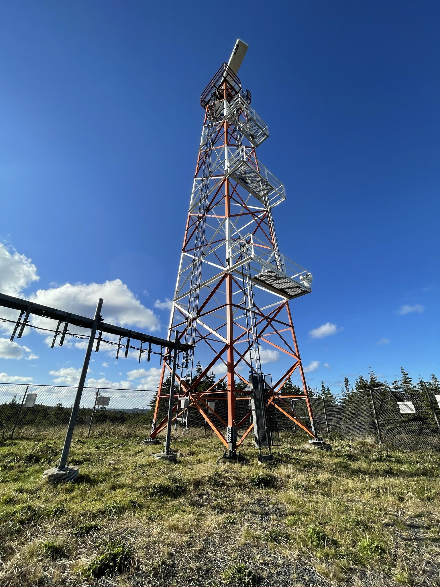
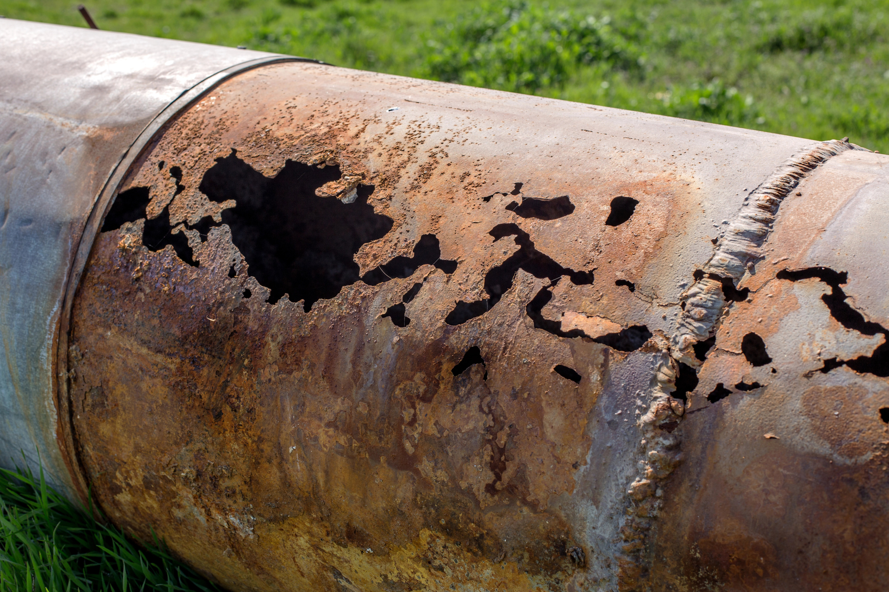
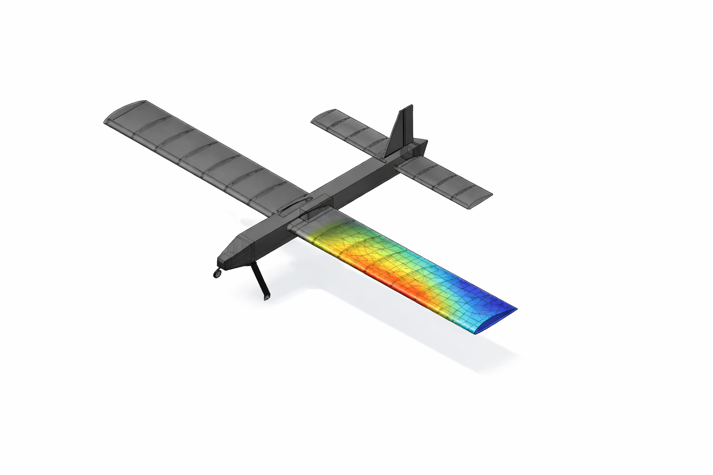

Infrastructure Inspection Project
Planned and executed tower inspections across Newfoundland, coordinating contractors and internal teams, access requirements, tower shutdowns, and logistics.
Read MoreProjects

Planned and executed tower inspections across Newfoundland, coordinating contractors and internal teams, access requirements, tower shutdowns, and logistics.
Read More
Supported the modernization of harbour range lights to improve marine safety, transitioning incandescent lighting to LED technology and implementing a remote-control system to manage brightness in real time.
Read More
Supported early-stage development of a chemical dosing program for offshore water injection wells, focused on mitigating corrosion risks and improving long-term well integrity.
Read More
Designed a compact, user-friendly microfluidic chip to separate circulating tumor cells from blood by size using inertial microfluidic forces in a spiral channel.
Read More
Helped develop a gamified augmented reality app that uses visual scanning exercises to retrain attention to the affected side for post-stroke spatial neglect patients.
Read More
Designed and built a remote-controlled aircraft, optimizing performance to maximize range, stability, maneuverability, and payload capacity under defined constraints.
Read More